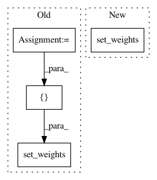

534a56bb2f790e17160586ed8a72b88d37de9c5a,autokeras/layer_transformer.py,,deeper_conv_block,#Any#Any#Any#,10
Before Change
filter_weight[index] = 1
weight[..., i] = filter_weight
bias = np.zeros(n_filters)
conv_weights = (add_noise(weight, np.array([0, 1])), add_noise(bias, np.array([0, 1])))
// conv_weights = (weight, bias)
new_conv_layer = StubConvBlock(n_filters, kernel_size=filter_shape)
bn_weights = [np.ones(n_filters, dtype=np.float32),
np.zeros(n_filters, dtype=np.float32),
np.zeros(n_filters, dtype=np.float32),
np.ones(n_filters, dtype=np.float32)]
new_conv_layer.set_weights([bn_weights, conv_weights])
return new_conv_layer
After Change
np.zeros(n_filters, dtype=np.float32),
np.zeros(n_filters, dtype=np.float32),
np.ones(n_filters, dtype=np.float32)]
bn.set_weights(new_weights)
return [bn,
StubActivation("relu"),
new_conv_layer,
In pattern: SUPERPATTERN
Frequency: 3
Non-data size: 4
Instances
Project Name: keras-team/autokeras
Commit Name: 534a56bb2f790e17160586ed8a72b88d37de9c5a
Time: 2018-05-21
Author: jin@tamu.edu
File Name: autokeras/layer_transformer.py
Class Name:
Method Name: deeper_conv_block
Project Name: keras-team/autokeras
Commit Name: 1d52eb75c5fcfb3f9465eb6614b7bb2b57dece4d
Time: 2018-05-20
Author: jin@tamu.edu
File Name: autokeras/layer_transformer.py
Class Name:
Method Name: deeper_conv_block
Project Name: keras-team/autokeras
Commit Name: 7977092d28d710ed325e4d91816fe39f504c06b8
Time: 2018-05-07
Author: jin@tamu.edu
File Name: tests/test_layer_transformer.py
Class Name:
Method Name: test_wider_bn